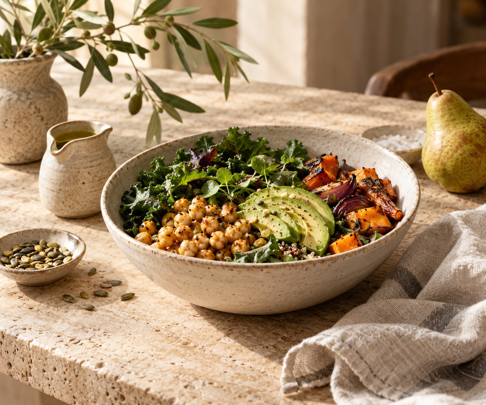

TALVEZ VOCÊ SE RECONHEÇA AQUI
Cuidar de você não precisa ser mais uma cobrança.
01 Sua rotina é intensa e o cuidado fica para depois.
02 As dietas restritivas já não fazem sentido para você.
03 Falta um acompanhamento que considere sua realidade.
04 Você quer mais saúde, disposição e equilíbrio.
UM OLHAR PARA O TODO
Seu corpo não vive separado
da sua vida.
Entender antes
de orientar.
Avaliação individualizada para conhecer sua história, seus hábitos, suas necessidades e seus objetivos.
Um plano que
cabe na rotina.
Planejamento alimentar com orientações baseadas em evidências e adaptadas às suas preferências.
Caminhar junto.
Ajustar sempre.
Acompanhamento da evolução e construção de hábitos sustentáveis, respeitando o seu ritmo.
POSSIBILIDADES DE CUIDADO
Diferentes necessidades.
O mesmo olhar atento.
Emagrecimento e
composição corporal
Um caminho gradual, com atenção à saúde e à relação com a comida, sem promessas ou padrões impostos.
Nutrição clínica
Orientação alimentar considerando suas necessidades e condições de saúde, em diálogo com o cuidado clínico.
Saúde da mulher
Cuidado nutricional atento às diferentes fases da vida e às particularidades de cada mulher.
Reeducação alimentar
Autonomia para fazer escolhas conscientes e desenvolver hábitos possíveis de manter.
Nutrição funcional
Um olhar integrado sobre alimentação, hábitos e necessidades individuais para orientar o planejamento.
Acompanhamento online
Escuta, planejamento e acompanhamento à distância, com a mesma atenção à sua história.
Um processo leve.
Um cuidado contínuo.
Primeiro contato
Conversamos sobre seu objetivo e esclarecemos como funciona o atendimento.
Avaliação nutricional
Um encontro para conhecer sua história, sua rotina e seus hábitos alimentares.
Seu planejamento
Orientações individualizadas que respeitam suas preferências e possibilidades.
Acompanhamento
Revisamos a evolução e ajustamos o caminho conforme suas necessidades.

IMAGEM ILUSTRATIVA · IAMAIS PRESENÇA. MAIS CONTEXTO.
O plano é seu.
O cuidado é por inteiro.
Uma avaliação vai além de uma lista de alimentos. É sobre compreender o que faz sentido para você, hoje.
- Anamnese e escuta da sua história
- Avaliação dos hábitos alimentares
- Composição corporal, quando aplicável
- Planejamento alimentar individualizado
- Monitoramento da evolução e ajustes
QUEM ACOLHE A SUA HISTÓRIA
Prazer,
Helena Vasconcelos.
Acredito em uma nutrição que aproxima você de si mesma.
Nesta proposta de atendimento, ciência e acolhimento caminham juntos. O objetivo é construir uma relação mais consciente com a alimentação, respeitando a individualidade e o contexto de cada pessoa.
O cuidado acontece na conversa, nas pequenas escolhas e na possibilidade de recomeçar quantas vezes for preciso.
Helena é uma personagem fictícia. Formação e registro profissional serão preenchidos com dados verificados na versão de uma profissional real.
PERTO DE VOCÊ, ONDE ESTIVER
Um espaço para
cuidar de você.
Presencial em Brasília, DF ou online. Escolha o formato que combina com o seu momento.
Consultar disponibilidadeBrasília, DF
- Endereço
- A definir na versão da profissional
- Horários
- A consultar após configurar o contato
- Online
- Atendimento por videochamada
⌖ Localização demonstrativa
Mapa disponível após configurar o endereço.
UM NOVO COMEÇO, NO SEU TEMPO
Seu cuidado começa com uma
escolha mais consciente.
Conheça uma forma de cuidar da sua alimentação
com mais escuta, equilíbrio e presença.